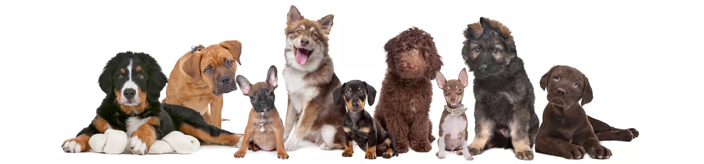
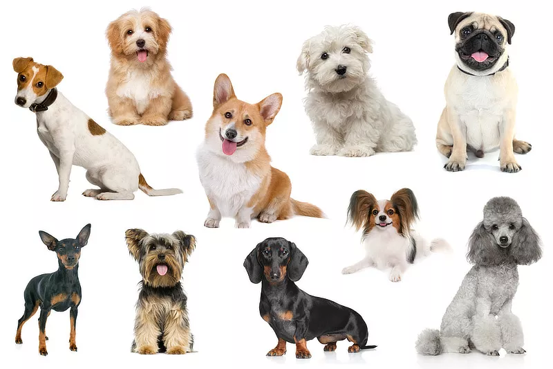
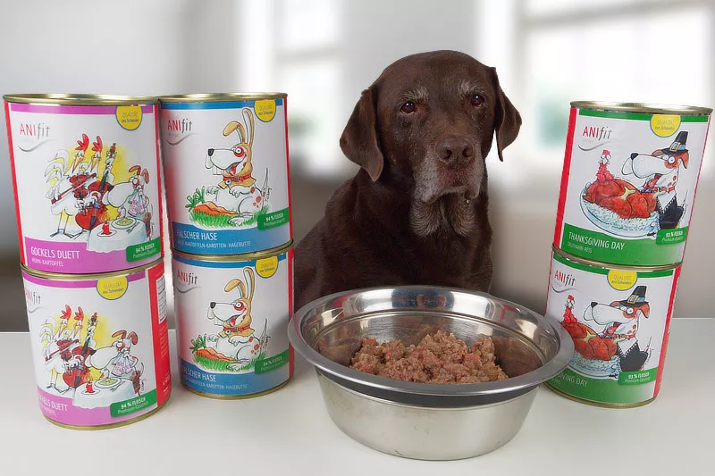
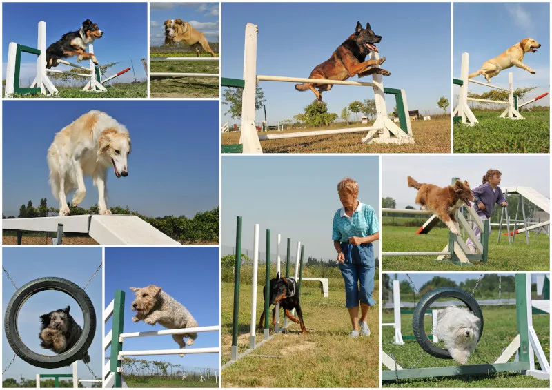
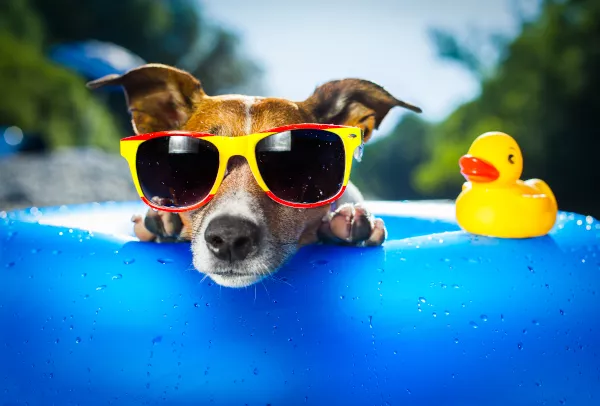
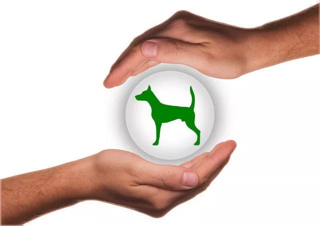

Egal ob Du bereits einen oder sogar mehrere Hunde hast, ob Du Dir einen Hund wünschst, oder ob Du mit dem Gedanken spielst, Dir einen Hund anzuschaffen: Bei uns bist Du genau richtig!

Hunderassen“
Zu der Kategorie „kleine Hunderassen“ gehören Vierbeiner, die als ausgewachsener Hund eine Widerristhöhe von bis zu 39 Zentimetern erreichen. Somit gehören sehr kleine Hunde wie zum Beispiel der Malteser zu den kleinen Hunden, doch ebenso Vierbeiner wie der Cocker Spaniel, der Basset Hound oder der Beagle. Hier stellen wir…weiterlesen

Hundfutter
Du bist auf der Suche nach einem gesunden und hochwertigen Nassfutter für Deinen Hund und hast in diesem Zusammenhang von Anifit gehört? Diese Marke hat in den letzten Jahren immer mehr an Bekanntheit gewonnen und viele Hundebesitzerinnen und Hundebesitzer schwören auf dieses hochwertige Hundefutter. Aber was steckt wirklich hinter A... weiterlesen

Hundensport
Ein bekanntes Sprichwort sagt: „Wer rastet, der rostet“ – und was auf uns Menschen zutrifft, das hat oft auch für unsere vierbeinigen Gefährten Gültigkeit. Sport und Aktivität sind sehr wichtig für die Gesundheit und das Wohlbefinden von Menschen wie auch von Hunden! Hierfür bietet sich Hundesport an. Doch nicht jede Hundesportart ist ... weiterlesen

Hundesprüche
Der Hund gilt schon sehr lange Zeit als der beste Freund des Menschen und für die meisten Hundehalter sind Hunde mittlerweile vollwertige Familienmitglieder. Kein Wunder also, dass es so viele tolle Hundesprüche, Zitate und Weisheiten rund ums Thema Hund gibt. Die meisten dieser Hundesprüche handeln von der besonderen Beziehung zwischen Mensch …weiterlesen

Urlaub mit Hund
Immer mehr Hundefreunde nehmen ihren Hund mit in Urlaub und die schönste Zeit des Jahres gemeinsam verbringen zu können. Hundehalter müssen sich bei der Urlaubsplanung allerdings deutlich mehr Gedanken machen als Menschen, die keinen Hund haben — nicht nur, wenn es ein Urlaub mit Hund im Ausland sein soll. Was es beim Urlaub mit Hund zu beachten... weiterlesen

Hundenversicherung
Es kann schnell einmal passieren, dass Dein Hund krank wird, sich verletzt, eine teure Operation braucht oder irgendeinen Schaden anrichtet. Da Du als Halter für Deinen Hund haftest und alle entstehenden Kosten übernehmen musst, kann das schnell sehr teuer für Dich werden. Es kann sogar Deinen finanziellen Ruin bedeuten! Aber keine Angst, es gibt ... weiterlesen